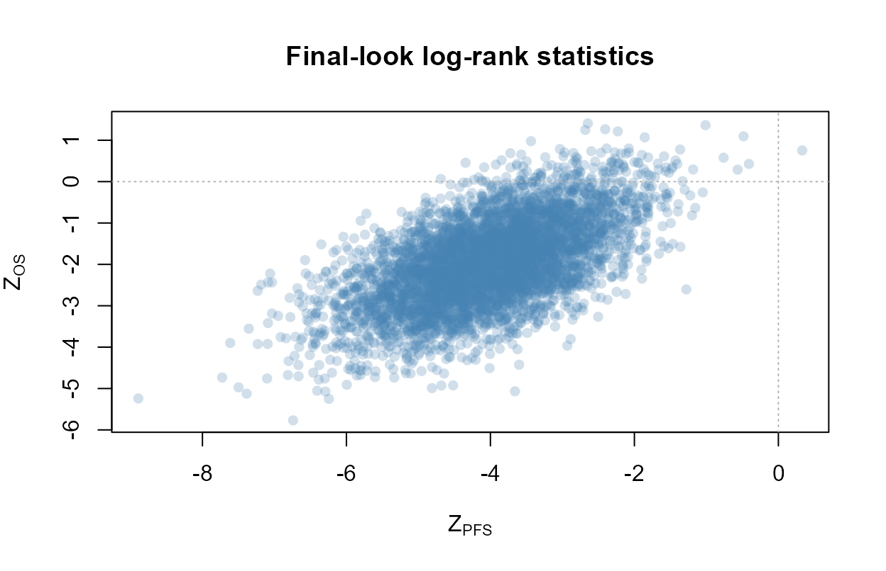

Group-sequential design with correlated PFS and OS under the Fleischer model
Source:vignettes/correlated-pfs-os-gsd.Rmd
correlated-pfs-os-gsd.RmdOverview
Many confirmatory oncology trials test progression-free survival (PFS) as the primary endpoint and overall survival (OS) as a key secondary endpoint, with the two endpoints tested in a fixed sequence to control the family-wise error rate. Because every PFS event is a death or a progression and every death is also a PFS event, the two endpoints are positively correlated, and that correlation is needed to characterize the operating characteristics of the sequential procedure.
This vignette simulates such a design with the simulation trio
simdata_fast, analysis_fast, and
simsummary_fast. It generates correlated PFS and OS times
from the Fleischer maximal-independence model, runs an event-driven
group-sequential design with one futility analysis followed by two
efficacy analyses, evaluates the power of each endpoint under the
alternative, and estimates the correlation of the standardized log-rank
statistics Corr(Z_PFS, Z_OS). The empirical correlation
reported here is the quantity for which a closed-form expression is
derived in a companion methodological note; the simulation provides an
independent check of that derivation and of the design’s operating
characteristics.
The Fleischer model
For a subject in group g the Fleischer
maximal-independence model (Fleischer, Gaschler-Markefski, and Bluhmki,
2009) takes an independent time-to-progression
TTP ~ Exp(lam1) and an overall survival time
OS ~ Exp(lam2), and sets
PFS = min(TTP, OS), OS = OS.Since TTP and OS are independent
exponentials, PFS is exponential with hazard
Lambda = lam1 + lam2. Given the medians of PFS and OS, the
OS hazard is lam2 = log(2) / median_OS and the PFS hazard
is Lambda = log(2) / median_PFS, so the implied TTP hazard
is lam1 = Lambda - lam2, which must be positive (median OS
at least median PFS in each group). The dependence between the two
endpoints is induced entirely through the shared OS
component.
The design
The trial is event-driven with three synchronized analyses indexed by cumulative PFS event counts. The first analysis is a non-binding futility look on PFS; the second and third are the efficacy interim and the efficacy final. PFS is the primary endpoint and OS is the key secondary endpoint, and the two are tested in the order PFS then OS: OS is declared significant only if PFS has already been declared significant at the same or an earlier look. The analyses are timed by PFS events, and the OS analysis at each look reuses the same calendar cutoff as the PFS analysis. The PFS efficacy boundary uses an O’Brien-Fleming Lan-DeMets alpha-spending function and the OS efficacy boundary uses a Pocock-type Lan-DeMets spending function, each at a one-sided level of 0.025 and each spent over the two efficacy looks. All tests are the ordinary unweighted log-rank test, one-sided in the direction of treatment benefit.
Design parameters
nsim <- 5000
seed <- 20260611
# Per-group sample sizes (group 1 = control, group 2 = treatment)
n_control <- 300
n_treat <- 300
r_alloc <- n_treat / n_control # allocation ratio treatment:control
# Piecewise-uniform accrual: 20 per month, then 40 per month (600 enrolled by month 18)
a_time <- c(0, 6)
a_rate <- c(20, 40)
# Median PFS and OS by group, in months
mst_PFS_C <- 6
mst_PFS_T <- 9
mst_OS_C <- 14
mst_OS_T <- 18
# Exponential hazards implied by the medians
lam_PFS_C <- log(2) / mst_PFS_C
lam_PFS_T <- log(2) / mst_PFS_T
lam_OS_C <- log(2) / mst_OS_C
lam_OS_T <- log(2) / mst_OS_T
# Fleischer maximal-independence: PFS hazard = TTP hazard + OS hazard,
# so the latent TTP hazard is the PFS hazard minus the OS hazard.
lam_TTP_C <- lam_PFS_C - lam_OS_C
lam_TTP_T <- lam_PFS_T - lam_OS_T
stopifnot(lam_TTP_C > 0, lam_TTP_T > 0)
# Non-informative exponential dropout, 10 percent per year on the month scale
eta <- -log(1 - 0.10) / 12
# Event-driven looks (cumulative PFS event counts):
# look 1 = futility, look 2 = efficacy interim, look 3 = efficacy final
d_PFS <- c(200, 300, 400)
L <- length(d_PFS)
# One-sided overall significance level
alpha_total <- 0.025
c(HR_PFS = lam_PFS_T / lam_PFS_C, HR_OS = lam_OS_T / lam_OS_C)
#> HR_PFS HR_OS
#> 0.6666667 0.7777778The PFS hazard ratio is the stronger effect and the OS hazard ratio is more modest, which is the usual pattern when a treatment delays progression more than it extends survival.
Data generation
The OS times and the shared dropout times are generated by
simdata_fast. Because the survival column produced with
e.median = list(median_OS_control, median_OS_treatment) is
the latent OS time, an independent TTP is drawn afterwards and combined
with OS to form the latent PFS. The dropout time is shared between the
two endpoints, so a subject who drops out is censored for both PFS and
OS at the same time.
# Step 1: OS and dropout from simdata_fast. surv_time is latent OS,
# dropout_time is the shared non-informative dropout, and tte / event are the
# observed OS endpoint min(OS, dropout) with its event indicator.
df <- simdata_fast(
nsim = nsim,
n = c(n_control, n_treat),
a.time = a_time,
a.rate = a_rate,
e.median = list(mst_OS_C, mst_OS_T),
d.hazard = eta,
seed = seed
)
# Step 2: an independent latent TTP per subject, drawn from a separate dqrng
# stream for reproducibility. Exp(rate) is generated as Exp(1) / rate.
dqrng::dqset.seed(seed + 1L)
rate_TTP <- ifelse(df$group == 1L, lam_TTP_C, lam_TTP_T)
ttp <- dqrng::dqrexp(nrow(df), rate = 1) / rate_TTP
# Latent OS and latent PFS = min(OS, TTP)
os_surv <- df$surv_time
pfs_surv <- pmin(os_surv, ttp)
# Observed OS endpoint is already in df (tte / event correspond to OS)
os_dat <- data.frame(
sim = df$sim,
group = df$group,
accrual_time = df$accrual_time,
os_tte = df$tte,
os_event = df$event
)
# Observed PFS endpoint: re-censor the latent PFS at the shared dropout time
pfs_tte <- pmin(pfs_surv, df$dropout_time)
pfs_event <- as.integer(pfs_surv <= df$dropout_time)
pfs_dat <- data.frame(
sim = df$sim,
group = df$group,
accrual_time = df$accrual_time,
tte = pfs_tte,
event = pfs_event
)Primary endpoint analysis (PFS)
PFS is analyzed at the three event-driven looks. With
event.looks the calendar cutoff at look l is
the time of the d_PFS[l]-th PFS event over the whole trial,
and analysis_fast returns that cutoff per simulation. These
cutoffs are exactly the analysis times of the design, and the OS
analysis below reuses them.
pfs_res <- analysis_fast(
pfs_dat,
control = 1,
event.looks = d_PFS,
stat = "logrank",
side = 1
)
# Per-simulation calendar cutoffs A_l (rows = simulation, columns = look)
A_mat <- matrix(pfs_res$cutoff, nrow = nsim, ncol = L, byrow = TRUE)
# With this sample size and these event targets the looks are reached in
# essentially every simulation; warn if any target is not reached.
if (!all(pfs_res$reached)) {
warning("Some PFS event targets were not reached; increase n or lower d_PFS.")
}
# Standardized PFS log-rank statistics (natural sign: benefit is negative)
Z_PFS <- matrix(pfs_res$logrank.z, nrow = nsim, ncol = L, byrow = TRUE)Key secondary endpoint analysis (OS)
OS is analyzed at the same per-simulation cutoffs A_l.
For each look the OS times are administratively censored at
A_l, and the one-sided log-rank statistic is computed with
analysis_fast at a single, deliberately large calendar time
so that no further censoring is applied to the already-cut data. This
reproduces the design rule that the OS analysis at a look uses the
PFS-driven analysis time.
big <- max(A_mat, na.rm = TRUE) + 1
os_blocks <- vector("list", L)
for (l in seq_len(L)) {
A_l <- A_mat[os_dat$sim, l] # per-row cutoff at look l
follow <- pmax(0, A_l - os_dat$accrual_time) # administrative follow-up
obs_t <- pmin(os_dat$os_tte, follow) # observed OS time at the look
obs_e <- os_dat$os_event *
as.integer(os_dat$accrual_time + os_dat$os_tte <= A_l)
cut_l <- data.frame(
sim = os_dat$sim,
group = os_dat$group,
accrual_time = 0,
tte = obs_t,
event = obs_e
)
res_l <- analysis_fast(
cut_l, control = 1, time.looks = big, stat = "logrank", side = 1
)
# Relabel as look l and report the PFS-driven cutoff for the timing summary;
# keep only the columns that are meaningful for the censored OS data.
res_l$look <- l
res_l$look.value <- d_PFS[l]
res_l$cutoff <- A_mat[, l]
os_blocks[[l]] <- res_l[, c("sim", "look", "look.value", "cutoff",
"n.event", "logrank.z", "logrank.chisq",
"logrank.p")]
}
os_res <- do.call(rbind, os_blocks)
os_res <- os_res[order(os_res$sim, os_res$look), ]
# Standardized OS log-rank statistics
Z_OS <- matrix(NA_real_, nsim, L)
for (l in seq_len(L)) Z_OS[, l] <- os_blocks[[l]]$logrank.zThe mean PFS and OS event counts at each look summarize the information available to each endpoint. PFS reaches its event targets by construction, while OS, being the slower endpoint, accrues far fewer events at the same analysis times.
d_PFS_emp <- colMeans(matrix(pfs_res$n.event, nrow = nsim, ncol = L, byrow = TRUE))
d_OS_emp <- colMeans(matrix(os_res$n.event, nrow = nsim, ncol = L, byrow = TRUE))
A_mean <- colMeans(A_mat)
data.frame(
look = seq_len(L),
d_PFS_target = d_PFS,
d_PFS_mean = round(d_PFS_emp),
d_OS_mean = round(d_OS_emp),
cutoff_months = round(A_mean, 1)
)
#> look d_PFS_target d_PFS_mean d_OS_mean cutoff_months
#> 1 1 200 200 112 15.3
#> 2 2 300 300 175 19.0
#> 3 3 400 400 250 24.0Efficacy and futility boundaries
Efficacy is assessed at the two later looks only. Two-look Lan-DeMets
alpha-spending boundaries are computed with gsDesign at the
information fractions implied by the event counts: the PFS information
fractions are the exact event-target ratios, and the OS information
fractions use the mean OS event counts. gsDesign reports
its boundaries on the convention that a positive Z favors the treatment,
so they are negated to match the natural sign of logrank.z,
where treatment benefit is a negative value. The first look carries a
non-binding futility rule on PFS, expressed as a threshold on the
standardized statistic.
timing_PFS_eff <- c(d_PFS[2] / d_PFS[3], 1)
timing_OS_eff <- c(d_OS_emp[2] / d_OS_emp[3], 1)
gs_PFS <- gsDesign::gsDesign(
k = 2, test.type = 1, alpha = alpha_total,
timing = timing_PFS_eff, sfu = gsDesign::sfLDOF
)
gs_OS <- gsDesign::gsDesign(
k = 2, test.type = 1, alpha = alpha_total,
timing = timing_OS_eff, sfu = gsDesign::sfLDPocock
)
b_PFS <- gs_PFS$upper$bound # positive z-boundaries (interim, final)
b_OS <- gs_OS$upper$bound
# Efficacy boundaries on the natural-sign scale; NA at the futility-only look 1.
eff_PFS <- c(NA, -b_PFS[1], -b_PFS[2])
eff_OS <- c(NA, -b_OS[1], -b_OS[2])
# Non-binding PFS futility at look 1: stop if the observed PFS hazard ratio is at
# or above futility_HR. On the natural-sign scale this is logrank.z at or above
# log(futility_HR) * sqrt(r * d) / (1 + r).
futility_HR <- 1.0
fut1 <- log(futility_HR) * sqrt(r_alloc * d_PFS[1]) / (1 + r_alloc)
fut_PFS <- c(fut1, NA, NA)
data.frame(
look = seq_len(L),
PFS_efficacy = round(eff_PFS, 3),
PFS_futility = round(fut_PFS, 3),
OS_efficacy = round(eff_OS, 3)
)
#> look PFS_efficacy PFS_futility OS_efficacy
#> 1 1 NA 0 NA
#> 2 2 -2.340 NA -2.060
#> 3 3 -2.012 NA -2.252Operating characteristics
The marginal operating characteristics of each endpoint are obtained
with simsummary_fast. For PFS the efficacy boundary and the
look-1 futility boundary are applied together on logrank.z
with direction = "lower", so a trial stops for efficacy
when the statistic is at or below the efficacy boundary and for futility
when it is at or above the futility boundary. For OS the efficacy
boundary is applied alone. The cum.reject value on the
overall row is the power of that endpoint considered on its own.
oc_PFS <- simsummary_fast(
pfs_res,
eff.col = "logrank.z", efficacy = eff_PFS,
fut.col = "logrank.z", futility = fut_PFS,
direction = "lower"
)
oc_PFS
#> Group-Sequential Operating Characteristics (simsummary_fast)
#> Simulations: 5000
#> Boundaries: efficacy on 'logrank.z' (direction = lower), futility on 'logrank.z'
#>
#> Stopping Boundaries: Look by Look
#> Look Info. Frac. Events (s) Sample (n) Efficacy Z Futility Z Cum. Cross. Eff.
#> 1 0.50 200.0 490.6 NA 0.0000 0.0000
#> 2 0.75 300.0 599.9 -2.3397 NA 0.8716
#> 3 1.00 400.0 600.0 -2.0118 NA 0.9794
#>
#> Events, Sample Size, Dropouts, Pipeline and Analysis Times: Look by Look
#> Look Info. Frac. Sample (n) Events (s) Dropouts (d) Pipeline Analysis Time
#> 1 0.50 490.6 200.0 18.4 272.2 15.25
#> 2 0.75 599.9 300.0 27.7 272.2 18.96
#> 3 1.00 600.0 400.0 37.2 162.8 24.01
#> Cross. Eff. Cross. Fut.
#> 0.0000 0.0020
#> 0.8716 0.0000
#> 0.1078 0.0000
#>
#> Overall
#> Rejection rate (efficacy): 0.9794
#> Futility-stop rate: 0.0020
#> Expected events at stop: 312.4
#> Expected sample size at stop: 599.7
#> Expected analysis time at stop:19.58
oc_OS <- simsummary_fast(
os_res,
eff.col = "logrank.z", efficacy = eff_OS,
direction = "lower"
)
oc_OS
#> Group-Sequential Operating Characteristics (simsummary_fast)
#> Simulations: 5000
#> Boundaries: efficacy on 'logrank.z' (direction = lower)
#>
#> Stopping Boundaries: Look by Look
#> Look Info. Frac. Events (s) Efficacy Z Cum. Cross. Eff.
#> 1 0.45 112.0 NA 0.0000
#> 2 0.70 174.9 -2.0598 0.3368
#> 3 1.00 250.4 -2.2516 0.4540
#>
#> Events, Sample Size, Dropouts, Pipeline and Analysis Times: Look by Look
#> Look Info. Frac. Events (s) Analysis Time Cross. Eff.
#> 1 0.45 112.0 15.25 0.0000
#> 2 0.70 174.9 18.96 0.3368
#> 3 1.00 250.4 24.01 0.1172
#>
#> Overall
#> Rejection rate (efficacy): 0.4540
#> Expected events at stop: 225.0
#> Expected analysis time at stop:22.30Under the alternative the PFS futility rule rarely stops the trial, which is the intended behavior: a futility look is meant to protect against continuing an ineffective treatment, not to interrupt a genuinely effective one.
Sequential testing of PFS then OS
The procedure tests OS only after PFS has been declared significant, and OS may be claimed only at the same look as, or a later look than, the PFS claim. The per-simulation rejection looks are recovered from the boundary-crossing logic, and the joint power is the probability of declaring both endpoints under this gatekeeping rule.
# First efficacy-crossing look for a matrix of statistics, honouring an optional
# futility rule that stops the trial without a rejection.
reject_look <- function(Z, efficacy, futility = NULL) {
nl <- ncol(Z)
ns <- nrow(Z)
stop_flag <- logical(ns)
out <- rep(NA_integer_, ns)
for (l in seq_len(nl)) {
active <- !stop_flag
if (!is.na(efficacy[l])) {
hit <- active & !is.na(Z[, l]) & Z[, l] <= efficacy[l]
out[hit] <- l
stop_flag[hit] <- TRUE
}
if (!is.null(futility) && !is.na(futility[l])) {
fut_hit <- !stop_flag & active & !is.na(Z[, l]) & Z[, l] >= futility[l]
stop_flag[fut_hit] <- TRUE
}
}
out
}
pfs_look <- reject_look(Z_PFS, eff_PFS, fut_PFS)
os_look <- reject_look(Z_OS, eff_OS)
pfs_reject <- !is.na(pfs_look)
os_reject <- !is.na(os_look)
# Hierarchical gatekeeping: OS is claimed only if PFS is claimed at the same or
# an earlier look.
joint_reject <- pfs_reject & os_reject & (os_look >= pfs_look)
power_table <- data.frame(
quantity = c("PFS power (marginal)",
"OS power (marginal)",
"OS power (after PFS, hierarchical)",
"Joint power (both endpoints)"),
value = c(mean(pfs_reject),
mean(os_reject),
mean(joint_reject),
mean(joint_reject))
)
power_table$value <- round(power_table$value, 3)
power_table
#> quantity value
#> 1 PFS power (marginal) 0.979
#> 2 OS power (marginal) 0.454
#> 3 OS power (after PFS, hierarchical) 0.448
#> 4 Joint power (both endpoints) 0.448The marginal OS power is the probability of crossing the OS efficacy boundary ignoring the gatekeeping, and the hierarchical OS power is the probability of claiming OS within the procedure. The latter cannot exceed the PFS power, since OS is reachable only through a PFS rejection.
Correlation of the log-rank statistics
The standardized log-rank statistics for the two endpoints are
positively correlated because they share the OS component and are
evaluated on overlapping risk sets at the same calendar cutoffs. The
full empirical correlation matrix of
Z = (Z_PFS_1, Z_PFS_2, Z_PFS_3, Z_OS_1, Z_OS_2, Z_OS_3)
summarizes both the within-endpoint correlation across looks and the
cross-endpoint correlation.
Zc <- cbind(Z_PFS, Z_OS)
colnames(Zc) <- c(paste0("PFS_", seq_len(L)), paste0("OS_", seq_len(L)))
cor_mat <- cor(Zc, use = "pairwise.complete.obs")
round(cor_mat, 3)
#> PFS_1 PFS_2 PFS_3 OS_1 OS_2 OS_3
#> PFS_1 1.000 0.814 0.712 0.634 0.523 0.436
#> PFS_2 0.814 1.000 0.875 0.518 0.625 0.522
#> PFS_3 0.712 0.875 1.000 0.458 0.549 0.590
#> OS_1 0.634 0.518 0.458 1.000 0.809 0.683
#> OS_2 0.523 0.625 0.549 0.809 1.000 0.843
#> OS_3 0.436 0.522 0.590 0.683 0.843 1.000The cross-endpoint correlation at matching looks is the diagonal of the PFS-by-OS block.
cross_block <- cor_mat[paste0("PFS_", seq_len(L)), paste0("OS_", seq_len(L)),
drop = FALSE]
data.frame(
look = seq_len(L),
cor_PFS_OS = round(diag(cross_block), 3)
)
#> look cor_PFS_OS
#> 1 1 0.634
#> 2 2 0.625
#> 3 3 0.590The within-endpoint correlation across looks follows the canonical
group-sequential form, in which the correlation between two looks of the
same endpoint is the square root of the ratio of their event counts,
sqrt(d_min / d_max). The empirical values reproduce this
closed form, with the PFS event counts equal to the exact targets and
the OS event counts taken from the simulation.
pairs_idx <- rbind(c(1, 2), c(1, 3), c(2, 3))
within_tab <- function(Zmat, d_counts, tag) {
emp <- apply(pairs_idx, 1, function(p) {
stats::cor(Zmat[, p[1]], Zmat[, p[2]], use = "complete.obs")
})
theo <- apply(pairs_idx, 1, function(p) {
sqrt(min(d_counts[p]) / max(d_counts[p]))
})
data.frame(
endpoint = tag,
look_pair = paste0(pairs_idx[, 1], "-", pairs_idx[, 2]),
empirical = round(emp, 3),
closed_form = round(theo, 3)
)
}
rbind(
within_tab(Z_PFS, d_PFS, "PFS"),
within_tab(Z_OS, d_OS_emp, "OS")
)
#> endpoint look_pair empirical closed_form
#> 1 PFS 1-2 0.814 0.816
#> 2 PFS 1-3 0.712 0.707
#> 3 PFS 2-3 0.875 0.866
#> 4 OS 1-2 0.809 0.800
#> 5 OS 1-3 0.683 0.669
#> 6 OS 2-3 0.843 0.836A scatter of the two final-look statistics shows the positive association directly. Each point is one simulated trial; the cloud is tilted, reflecting the shared OS component.
plot(
Z_PFS[, L], Z_OS[, L],
pch = 16, col = grDevices::adjustcolor("steelblue", alpha.f = 0.25),
xlab = expression(Z[PFS]), ylab = expression(Z[OS]),
main = "Final-look log-rank statistics"
)
abline(h = 0, v = 0, col = "grey70", lty = 3)
Standardized log-rank statistics at the final look.
Remarks
The cross-endpoint correlation at matching looks is moderate, around 0.6, and is largest at the first look, easing slightly as the trial matures. This cross-endpoint correlation is the input a sequential PFS-then-OS procedure needs to characterize its joint operating characteristics, and the value estimated here by simulation matches the closed-form expression derived for the Fleischer model in the companion methodological note. The within-endpoint correlations match the canonical group-sequential form to simulation error, which serves as a check on the event-driven timing and the shared-cutoff OS analysis.
The simulation uses the validated Rcpp primitives behind
analysis_fast for every log-rank computation, so the entire
study of 5,000 trials with three looks per endpoint runs in a few
seconds. Raising nsim tightens the correlation and power
estimates at a proportional cost.
References
Fleischer, F., Gaschler-Markefski, B., and Bluhmki, E. (2009). A statistical model for the dependence between progression-free survival and overall survival. Statistics in Medicine, 28(21), 2669-2686.
Lan, K. K. G. and DeMets, D. L. (1983). Discrete sequential boundaries for clinical trials. Biometrika, 70(3), 659-663.
O’Brien, P. C. and Fleming, T. R. (1979). A multiple testing procedure for clinical trials. Biometrics, 35(3), 549-556.
Pocock, S. J. (1977). Group sequential methods in the design and analysis of clinical trials. Biometrika, 64(2), 191-199.